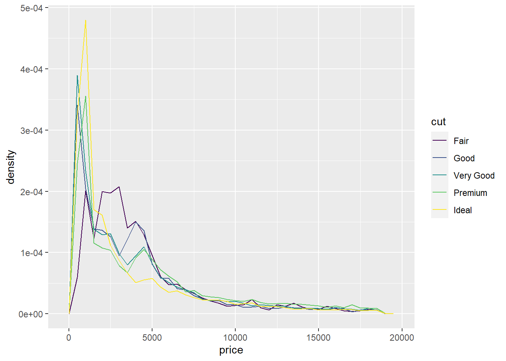
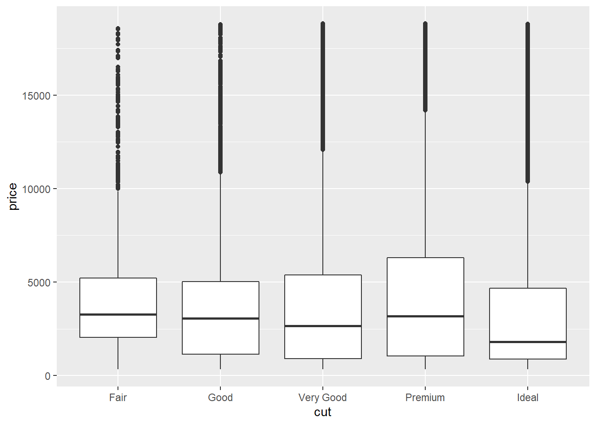

Розділ 4 Лабораторна робота №3. Розвідувальний аналіз даних. Візуалізація
Мета: Засвоєння принципів, знайомство з інструментами та набуття навичок експлораторного (розвідувального) аналізу даних засобами мови програмування R та колекції пакетів dplyr, ggplot2, desctable, "GGally", "corrplot", "PerformanceAnalytics", "FactoMineR", "factoextra", "funModeling", "desctable", "ade4", "psych", "smacof", "WVPlots", "caret", "car".
4.1 Що ви будете вміти?
- розв’язувати задачі розвідувального аналізу даних засобами мови R у середовищі IDE RStudio.
- візуалізувати результати аналізу.
4.2 Короткі теоретичні відомості
4.2.1 Що таке розвідувальний аналіз даних?
У рамках життєвого циклу процесу Data Mining згідно з методологією CRISP DM (wikipedia 2018a), першою фазою аналізу даних є “Розуміння даних” (Understanding) (рис. 1). До цієї фази входять розглянуті у попередніх лабораторних роботах задачі збору та різного роду трасформації. Наступною важливою задачею даної фази є вивчення даних, що складає основу так званого розвідувального аналізу даних (Exploratory data analysis, EDA).
Розвідувальний аналіз даних – аналіз основних властивостей даних, виявлення в них загальних закономірностей, розподілів та аномалій, побудова початкових моделей шляхом їх перетворення та/або представлення у зручному вигляді: графічному, табличному, схем, діаграм і т.ін. (wikipedia 2018b)
Рис. 1. Структура задачі розуміння даних у складі Data Science-проекту (Garrett Grolemund 2018)
Термін EDA був введений математиком Джоном Тьюкі, який сформулював цілі РАД таким чином:
- максимальне “проникнення” в дані
- виявлення основних структур
- вибір найважливіших змінних
- виявлення відхилень та аномалій
- перевірка основних гіпотез
- розробка початкових моделей
До основних інструментів РАД відносятся:
- аналіз ймовірностних розподілів змінних
- побудова та аналіз кореляційних матриць
- методи зниження розмірності даних: факторний аналіз, дискримінантний аналіз, багатовимірне шкалювання та ін.
РАД – це ітеративна процедура, в результаті якої ми:
- формулюємо запитання щодо наших даних
- шукаємо відповідь за допомогою візуалізації, трасформації та моделювання наявних даних
- аналізуємо те, що отримано в результаті аналізу та формулюємо нові запитання.
“РАД є важливою частиною будь-якого аналізу даних, навіть якщо питання надається вам на блюді, тому що вам завжди потрібно вивчити якість ваших даних. Очищення даних – це лише одне застосування РАД: ви задаєте питання про те, чи відповідають ваші дані вашим очікуванням чи ні.” (Garrett Grolemund 2018).
Для очищення даних нам потрібно буде розгорнути всі інструменти РАД: візуалізацію, перетворення та моделювання.
4.2.2 Питання
Не існує правил, яким ми могли би керуватися, в частині того, які питання нам слід задавати в процесі своїх досліджень. Проте два типи питань завжди будуть корисними для того, щоб робити відкриття у наших даних. У самій довільній формі ці питання можна сформулювати так (Garrett Grolemund 2018):
- Який тип варіації має місце в моїх змінних?
- Який тип коваріації має місце між моїми змінними?
4.2.2.1 Варіація
Варіація (Variation) – це тенденція до змін значення змінної від вимірювання до вимірювання. Ми можете легко помітити варіації в реальному житті; якщо ми двічі вимірюємо постійну змінну, ми отримаємо два різні результати.
Категоричні змінні також можуть відрізнятися, якщо виміри робити для різних суб’єктів (наприклад, кольори очей різних людей) або у різні моменти часу (наприклад, енергетичні рівні електрона в різні моменти). Кожна змінна має свій власний паттерн у варіації, який може виявити цікаву інформацію. Найкращий спосіб зрозуміти цю закономірність – візуалізувати розподіл значень змінної.
4.2.2.1.1 Візуалізація розподілу
Нижче наведено приклад розподілу категоріальної змінної.
library(tidyverse)
library(ggplot2)
ggplot(data = diamonds) +
geom_bar(mapping = aes(x = cut))
Частоту для кожного значення категоріальної змінної можна обчислита, наприклад, так:
diamonds %>%
count(cut)## # A tibble: 5 x 2
## cut n
## <ord> <int>
## 1 Fair 1610
## 2 Good 4906
## 3 Very Good 12082
## 4 Premium 13791
## 5 Ideal 21551Для неперервної змінної доцільно побудувати гістограму:
ggplot(data = diamonds) +
geom_histogram(mapping = aes(x = carat), binwidth = 0.5)
Інтервальна таблиця частот, що відповідає гістограмі, може бути обчислена так:
diamonds %>%
count(cut_width(carat, 0.5)) ## # A tibble: 11 x 2
## `cut_width(carat, 0.5)` n
## <fct> <int>
## 1 [-0.25,0.25] 785
## 2 (0.25,0.75] 29498
## 3 (0.75,1.25] 15977
## 4 (1.25,1.75] 5313
## 5 (1.75,2.25] 2002
## 6 (2.25,2.75] 322
## 7 (2.75,3.25] 32
## 8 (3.25,3.75] 5
## 9 (3.75,4.25] 4
## 10 (4.25,4.75] 1
## 11 (4.75,5.25] 1Можна побудувати шістограму для певної долі значень:
smaller <- diamonds %>%
filter(carat < 3)
ggplot(data = smaller, mapping = aes(x = carat)) +
geom_histogram(binwidth = 0.1)
Часто буває доцільно поудвати серія гістограм для різних груп спостережень:
ggplot(data = smaller, mapping = aes(x = carat, colour = cut)) +
geom_freqpoly(binwidth = 0.1)
Після того, як ми виконали візуалізацію, що ми маємо знайти на цих графіках? Яка може бути послідовність запитань на наступному етапі?
*Типові запитання з урахуванням специфіка даної задачі можуть виглядати так:
- Які значення є найбільш поширеними? Чому?
- Які значення є рідкісними? Чому? Це відповідає нашим очікуванням?
- Чи бачемо ми якісь незвичайні закономірності? Що може їх пояснити?
Як приклад, гістограма нижче наводить кілька цікавих питань:
- Чому там більше діамантів праворуч від кожного піка, ніж трохи ліворуч від кожного піка?
- Чому немає діамантів більше 3 каратів?
ggplot(data = smaller, mapping = aes(x = carat)) +
geom_histogram(binwidth = 0.01)
4.2.2.1.2 Незвичайні значення
Як правило у вибіркових даних зустірчаються викиди (outliers) – такі значення свідчать або про похибку вимірювання, або про якість надзвичайні причини, що потребують уважного вивчення.
ggplot(diamonds) +
geom_histogram(mapping = aes(x = y), binwidth = 0.5)
Для того, щоб їх побачити, необхідно певним чином масштабувати гістограму:
ggplot(diamonds) +
geom_histogram(mapping = aes(x = y), binwidth = 0.5) +
coord_cartesian(ylim = c(0, 50))
Якщо приймається рішення їх видалити, то це можна зроити наступним чином:
unusual <- diamonds %>%
filter(y < 3 | y > 20) %>%
select(price, x, y, z) %>%
arrange(y)
unusual## # A tibble: 9 x 4
## price x y z
## <int> <dbl> <dbl> <dbl>
## 1 5139 0 0 0
## 2 6381 0 0 0
## 3 12800 0 0 0
## 4 15686 0 0 0
## 5 18034 0 0 0
## 6 2130 0 0 0
## 7 2130 0 0 0
## 8 2075 5.15 31.8 5.12
## 9 12210 8.09 58.9 8.064.2.2.1.3 Пропущені значення (Missing values)
Часто на практиці дані виявляються некомплектними – мають місце пропущенні дані (NA). У таких випадках відомі два виходи з систуації:
- видалити некомплектні спостереження
- виконати імпутацію пропущених значень – замінити пропущені значення певними у відповідності з якимось алгоритмом.
Пакет ggplot2 автоматично видаляє некмоплектні дані:
diamonds## # A tibble: 53,940 x 10
## carat cut color clarity depth table price x y z
## <dbl> <ord> <ord> <ord> <dbl> <dbl> <int> <dbl> <dbl> <dbl>
## 1 0.23 Ideal E SI2 61.5 55 326 3.95 3.98 2.43
## 2 0.21 Premium E SI1 59.8 61 326 3.89 3.84 2.31
## 3 0.23 Good E VS1 56.9 65 327 4.05 4.07 2.31
## 4 0.29 Premium I VS2 62.4 58 334 4.2 4.23 2.63
## 5 0.31 Good J SI2 63.3 58 335 4.34 4.35 2.75
## 6 0.24 Very Good J VVS2 62.8 57 336 3.94 3.96 2.48
## 7 0.24 Very Good I VVS1 62.3 57 336 3.95 3.98 2.47
## 8 0.26 Very Good H SI1 61.9 55 337 4.07 4.11 2.53
## 9 0.22 Fair E VS2 65.1 61 337 3.87 3.78 2.49
## 10 0.23 Very Good H VS1 59.4 61 338 4 4.05 2.39
## # ... with 53,930 more rowsdiamonds2 <- diamonds %>%
mutate(y = ifelse(y < 3 | y > 20, NA, y))ggplot(data = diamonds2, mapping = aes(x = x, y = y)) +
geom_point()## Warning: Removed 9 rows containing missing values (geom_point).
Інколи ми хочемо зрозуміти, що робить спостереження з відсутніми значеннями, відмінними від спостережень із записаними значеннями. Наприклад, у nycflights13::flights, відсутні значення в змінній dep_time (час вильоту) показують, що рейс був скасований. Тому, можливо, нам потрібно буде порівняти заплановані терміни вильоту для скасованих та не скасованих часів. Ми можемо зробити це, зробивши нову змінну з is.na():
nycflights13::flights %>%
mutate(
cancelled = is.na(dep_time),
sched_hour = sched_dep_time %/% 100,
sched_min = sched_dep_time %% 100,
sched_dep_time = sched_hour + sched_min / 60
) %>%
ggplot(mapping = aes(sched_dep_time)) +
geom_freqpoly(mapping = aes(colour = cancelled), binwidth = 1/4)
4.2.2.2 Коваріація
Якщо варіація описує поведінку в межах змінної, коваріація описує поведінку між змінними.
Коваріація (Covariation) – це схильність значень двох чи більше змінних змінюватися разом. Найкращим способом виявлення коваріації є візуалізація відносин між двома чи більше змінних.
4.2.2.2.1 Категоріальні та неперервні змінні
Природнім є рішення щодо вивчення розподілу неперервної змінної, розбивши її на групи у відповідності до значень категоріальної змінної, як у попередньому багатокутнику частот. Поява за замовчуванням geom_freqpoly() не є таким корисним для подібного порівняння, оскільки його висоту визначає кількість. Це означає, що якщо одна з груп є набагато меншою, ніж інші, важко побачити відмінності у формі. Наприклад, давайте розглянемо, як ціна діамантів змінюється залежно від його якості:
ggplot(data = diamonds, mapping = aes(x = price)) +
geom_freqpoly(mapping = aes(colour = cut), binwidth = 500)
Важко побачити різницю в розподілах, оскільки кількість вибіркових значень у кожній групі суттєво відрізняється:
ggplot(diamonds) +
geom_bar(mapping = aes(x = cut))
Для полегшення порівняння нам потрібно поміняти те, що відображається на осі Y. Замість того, щоб відображати частоту, ми покажемо відносну частоту, яка є нормованою величиною.
ggplot(data = diamonds, mapping = aes(x = price, y = ..density..)) +
geom_freqpoly(mapping = aes(colour = cut), binwidth = 500)
В результаті можна побачити, що найвищу середню ціну мають посередні діаманти (fair). Але аналіз щільностей розпоілів є не зовсім зручним. Альтернативним варіантом представлення аналогічної інформації є п’ятиквантильний графік (boxplot, box and wiskers plot), відомий як “боксплот,” або “ящик з вусами.” Боксплот акумулює в собі всі найважливіші інтегральні харакетристики стосовно мір центральної тенденції, розсіювання та форми розподілу (рис. 3).
Рис. 3. Структура боксплота (Garrett Grolemund 2018)
Тоді для нашого випадку застосування боксплотів дасть такий результат:
ggplot(data = diamonds, mapping = aes(x = cut, y = price)) +
geom_boxplot()
4.2.2.2.2 Дві категоріальні змінні
Для візуалізації коваріації між категоріальними змінними неохідно візуалізувати частоти: у вигляді таблиці, або певного графічного візуалізатора. Наприклад:
ggplot(data = diamonds) +
geom_count(mapping = aes(x = cut, y = color))
З результатів видно, що існує певна залежність між кольором діаманта, та якістю його ограненості.
4.2.2.3 Пакет FunModelling
Відносно недавно з’явився пакет під назвою FunModelling (Casas 2020), в арсеналі якого є набір корисних інструментів, що суттєво спрощують деякі процедури розвідувального аналізу, особливо на самому початку, коли вивчається структура даних. Зокрема
df_status(): структура набору даних для профілюванняdescribe(): чисельне та категоріальне профілювання (кількісне)freq(): категоріальне профілювання (кількісне та графік).profileing_num(): профілювання для числових змінних (кількісний)plot_num (дані): профілювання для числових змінних (графіки)
4.2.3 Зниження розмірності даних
Зниження розмірності (Dimensionality reduction) – процесс скорочення кількості випадкових змінних шляхом отримання гооловних змінних. Цей процес можно поділити обирання ознак та виділяння ознак.
Обирання ознак – це процес пошуку первісних змінних (факторів), що починаються в рамках фази розуміння даних із залученням експертів предметної галузі і з залученням всього арсеналу інстурментів маніпулювання даними, про що йшлося вище. (Маніпулятивні методики).
Проектування ознак – це перетворення даних з багатовимірного простору у простір простір невеликої кількості вимірів. (Математичні методики). (Далі під зниженням розмірнонсті будем мати на увазі саме проектування ознак). Існує велика кількість лінійних і нелінійних методик зниження розмірності.
Що дає зниження розмірності на практиці? В першу чергу спрощення представлення багатовимірних даних, їх візуалізацію, вирішення задач класифікації та регресії і, власне, краще розуміння процесів, що моделюються.
Одним з фундаментальних лінійних методів зниження розмірності, що широко викорстовується на практиці, є PCA (wikipedia 2018c).
4.2.3.1 Постановка задачі аналізу методом главних компонент (PCA)
Припустимо (wikipedia 2018c), що ми маємо випадковий вектор \(X\): \[ X=\begin{pmatrix} x_1 \\ x_2 \\ \vdots \\ x_n \end{pmatrix} \]
З коваріаційною матрицею:
\[
var(X) = \Sigma =
\begin{pmatrix}
\sigma_{1}^2 & \sigma_{12} & \ldots & \sigma_{1p}\\
\sigma_{21} & \sigma_{2}^2 & \ldots & \sigma_{2p}\\
\vdots & \vdots & \ddots & \vdots\\
\sigma_{p1} & \sigma_{p2} & \ldots & \sigma_{p}^2
\end{pmatrix}
\]
Мета PCA (Science 2020) полягає в пошуку \(k\) лінійних комбінацій \(p\) змінних \(X\), що містять найбільшу дисперсію. Лінійна комбінація має насупний вигляд:
\(Y_1 = a_{11} X_1 + a_{12} X_2 + \cdots + a_{1p} X_p\)
\(Y_2 = a_{21} X_1 + a_{22} X_2 + \cdots + a_{2p} X_p\)
\(\vdots\)
\(Y_k = a_{k1} X_1 + a_{k2} X_2 + \cdots + a_{kp} X_p\)
При цьому \(\sum\limits_{i=1}^pa_{1i}^2=1\) і т. д.
Дисперсия першої главної компоненти \(var(Y_1)=a_1'\Sigma a_1\), де \(\Sigma\) – ковариаційна матриця.
Аналогічно обчислюється дисперсія другої і т. д. головних компонент.
У даній моделі вектори \(a_i'=(a_{i1}, a_{i2},...,a_{ip})',\;i=\overline{1,p}\) представляють власні вектори ковариаційної матриці \(\Sigma\), тоді як дисперсія \(i\)-ої головної компоненти дорівнює власному значенню матриці ковариацій:
\(var(Y_i)=\lambda_i\).
Загальна дисперсія вибірки дорівнює \(\sum\limits_{i=1}^p\lambda_{i}.\)
Метод головних компонент (PCA) вирішуючи задачу зниження розмірності дозволяє одночасно вирішити задачу сегементації (кластеризації) – тобто з’ясувати, чи є досліджувані дані однорідними, чи сегментовані на групи зі схожими ознаками. Відповідь на це питання є однією з головних задач експлораторного аналізу, що передує етапу побуви більш складних моделей класифікації, регресії чи моделей на основі асоціативних правил.
В арсеналі R існує багато інструментів для реалізації зниження розмірності, зокрема PCA.
4.3 Приклад виконання індивідуального завдання
4.3.1 Постановка задачі
Дано стандартний багатовимірний набір даних Іриси Фішера (англ. Iris flower data set).
Іриси Фішера складаються з даних про 150 вимірювань ірисів з трьох видів —- Iris setosa, Iris virginica і Iris versicolor, по 50 вимірювань на вид. Для кожного екземпляра вимірювалися чотири характеристики (в сантиметрах):
- Довжина зовнішньої частки оцвітини (англ. sepal length);
- Ширина зовнішньої частки оцвітини (англ. sepal width);
- Довжина внутрішньої частки оцвітини (англ. petal length);
- Ширина внутрішньої частки оцвітини (англ. petal width).
Для даного набору виконати розвідувальний аналіз даних.
Необхідно дати відповідь на такі питання:
- чи є дані комплектними? з’ясувати характер розподілу змінних.
- чи пов’язані між собою характеристики? якщо пов’язані, то які і як?
- чи існує проста структура, яка дозволяє описати дані об’єкти в просторі розмірністю менш ніж
4? якщо існує – побудувати таку модель. - чи є всі три види ірисів однорідними у даному просторі ознак? якщо ні, то виконати сегментацію – знайти групи з однорідними ознаками.
Результати представити із застосуванням простих і зрозумілих візуалізаторів.
4.3.2 Виконання завдання
Дані з досліджуваного набору мають наступний вигляд:
iris %>%
head()## Sepal.Length Sepal.Width Petal.Length Petal.Width Species
## 1 5.1 3.5 1.4 0.2 setosa
## 2 4.9 3.0 1.4 0.2 setosa
## 3 4.7 3.2 1.3 0.2 setosa
## 4 4.6 3.1 1.5 0.2 setosa
## 5 5.0 3.6 1.4 0.2 setosa
## 6 5.4 3.9 1.7 0.4 setosa# iris %>%
# desctable()Обчислимо і дослідимо сумарні статистики.
# Сводные выборочные характеристики
iris %>%
df_status() ## variable q_zeros p_zeros q_na p_na q_inf p_inf type unique
## 1 Sepal.Length 0 0 0 0 0 0 numeric 35
## 2 Sepal.Width 0 0 0 0 0 0 numeric 23
## 3 Petal.Length 0 0 0 0 0 0 numeric 43
## 4 Petal.Width 0 0 0 0 0 0 numeric 22
## 5 Species 0 0 0 0 0 0 factor 3Що ми бачимо?
- всі дані мають числову природу
- дані комплектні: відстуні пропущені значення
- відсутні нульові значення – це знімає можливі проблеми при трансформації
- відсутні надвелики значення – надвелики значення кожен раз потребують серйозної уваги і аналізу можливих причин, що їх викликали
- по всіх змінних дані мають варіацію по унікальним значенням одного порядку.
Дослідимо закони розподілу кожної з чотирьох змінних.
# Гистограмм по всем переменным
iris %>%
plot_num()## Warning: `guides(<scale> = FALSE)` is deprecated. Please use `guides(<scale> =
## "none")` instead.iris %>%
profiling_num()## variable mean std_dev variation_coef p_01 p_05 p_25 p_50 p_75
## 1 Sepal.Length 5.843333 0.8280661 0.1417113 4.400 4.600 5.1 5.80 6.4
## 2 Sepal.Width 3.057333 0.4358663 0.1425642 2.200 2.345 2.8 3.00 3.3
## 3 Petal.Length 3.758000 1.7652982 0.4697441 1.149 1.300 1.6 4.35 5.1
## 4 Petal.Width 1.199333 0.7622377 0.6355511 0.100 0.200 0.3 1.30 1.8
## p_95 p_99 skewness kurtosis iqr range_98 range_80
## 1 7.255 7.700 0.3117531 2.426432 1.3 [4.4, 7.7] [4.8, 6.9]
## 2 3.800 4.151 0.3157671 3.180976 0.5 [2.2, 4.151] [2.5, 3.61]
## 3 6.100 6.700 -0.2721277 1.604464 3.5 [1.149, 6.7] [1.4, 5.8]
## 4 2.300 2.500 -0.1019342 1.663933 1.5 [0.1, 2.5] [0.2, 2.2]# dimnames(iris)Що ми бачимо?
- статистичні розподіли змінних
"Sepal.Length","Sepal.Width"мають дзвоноподібну форму, наближену до нормального. Враховуючи, що значення оцінок асимметрії та ексцесу несуттєво відрізняються від нуля, в першому наближенні можна вважати дані розподіли нормальними. Про що це говорить і що це дає? По-перше, це говорить про те, що доля малих і великих даних врівноважують одна одну, по-друге, нормальність законів розподілу досліджуваних величин, або, принаймні, “натяк” на нормальність завжди добре, тому що класичними передумовами для коректної побудови великої кількості різного роду моделей вимагає від даних нормального закону розподілу, чи, принаймні, симетричності закону розподілу. В нашому випадку це є передумовою однорідного розподілу спостережень у просторі інформативних ознак, що є позитивним моментом при вирішенні задачі сегментації.
- статистичні розподіли змінних
"Petal.Length","Petal.Width"на відміну від двох інших, мають чітку бімодальну структуру, що гооврить про явно виражену неоднорідність даних і про те, що саме ці дві змінні є дискримінуючими у просторі досліджуваних ознак; це важливо для побудови задачі сегментації
Для відповіді на питання, чи пов’язані між собою змінні, застосуємо кореляційний аналіз. З урахуванням числової природи даних, для оцінки кореляції скористаємося коефіцієнтом кореляції Пірсона. Враховуючі багатомірний аналіз початкових даних, важливо вдало підібрати візуалізатор. Нижче запропоновано два з найбільш відомих і поширених.
# Кореляція Пірсона
iris %>%
select(-Species) %>%
cor() %>%
corrplot(order = "hclust", tl.col='black', tl.cex=.75) # chart.Correlation(histogram=TRUE, pch=19)# pairs(iris[1:4], main="Edgar Anderson's Iris Data", font.main=4, pch=19)
iris %>%
select(-Species) %>%
pairs( main="Edgar Anderson's Iris Data", font.main = 4, pch = 19, col = iris$Species)
# pairs(iris[1:4], main="Edgar Anderson's Iris Data", font.main = 4, pch = 19, col = iris$Species)df_iris <- iris %>%
select(-Species)
# df_iris %>%
# correlation_table("")
df_iris %>%
cor() %>%
# head(11)
knitr::kable(caption = "Таблица оценок коэффициентов корреляции") | Sepal.Length | Sepal.Width | Petal.Length | Petal.Width | |
|---|---|---|---|---|
| Sepal.Length | 1.0000000 | -0.1175698 | 0.8717538 | 0.8179411 |
| Sepal.Width | -0.1175698 | 1.0000000 | -0.4284401 | -0.3661259 |
| Petal.Length | 0.8717538 | -0.4284401 | 1.0000000 | 0.9628654 |
| Petal.Width | 0.8179411 | -0.3661259 | 0.9628654 | 1.0000000 |
Що ми бачимо?
- має місце сильний позитивний кореляційний зв’язок між змінною
Sepal.Lengthта зміннимиPetal.Length,Petal.Width; на кореляційних полях чітко видно наявність даної кореляції - на кореляційних полях чітко видно наявність неоднородності даних – дані чітко поділяються на гомогенні групи за змінною
Species - має місце слабкий від’ємний кореляційний зв’язок
Petal.LengthіSepal.Width; дана кореляція є уявною в силу сегментованості даних по зміннійSpecies: якщо уважно дослідити форму кореляційних полів для кожного значення данної змінної, то можна побачити, що всередині кожного сегменту має місце позитивна кореляція
Що це нам дає?
- наявність високого ступеня кореляції дає можливість знизити розмірність даних і знайти просту структуру у просторі меншої розмірності
- у просторі меншої розмірності можна можна виконати сегментацію даних.
Для зниження розмірності і одночасно сегментації даних скористаємося методом головних компонент (PCA).
# PCA
resPCA <- iris %>%
select(-Species) %>%
PCA(ncp = 8, graph = FALSE)# власні значення та кумулятивний процент
eigenvalues <- as.data.frame(resPCA$eig)
cumVar <- round(eigenvalues$`cumulative percentage of variance`[length(eigenvalues$eigenvalue[eigenvalues$eigenvalue >= 0.9])], 2)knitr::kable(
eigenvalues,
caption = "Власні значення (eigenvalues) і сумарний процент поясненої дисперсії"
)| eigenvalue | percentage of variance | cumulative percentage of variance | |
|---|---|---|---|
| comp 1 | 2.9184978 | 72.9624454 | 72.96245 |
| comp 2 | 0.9140305 | 22.8507618 | 95.81321 |
| comp 3 | 0.1467569 | 3.6689219 | 99.48213 |
| comp 4 | 0.0207148 | 0.5178709 | 100.00000 |
#
fviz_screeplot(resPCA, addlabels = TRUE, ncp=10)Чщо ми бачимо?
Ми маємо \(p=\) 2 головних компонент, які пояснюють 95.81 % дисперсії. Це значить, що м маємо всього дві нові компоненти замість чотирьох і практично без втрати інформації можемо представити всі спостереження в системі двох координат на площині: перша компонента по осі Х, друга – по осі Y (див. рис.).
Проаналізуємо детально структуру двох перших компонент, виключивши решту незначимих (див. табл. і рис.).
# Навантаження для двох перших головних компонент
knitr::kable(
resPCA$var$coord[ ,1:2],
caption = "Таблиця навантажень"
)| Dim.1 | Dim.2 | |
|---|---|---|
| Sepal.Length | 0.8901688 | 0.3608299 |
| Sepal.Width | -0.4601427 | 0.8827163 |
| Petal.Length | 0.9915552 | 0.0234152 |
| Petal.Width | 0.9649790 | 0.0639998 |
Що ми бачимо?
- Структуру першої компоненти головним чином складають три початкові змінні:
Sepal.Length,Petal.Length,Petal.Width; як і прогнозувалося раніше, саме за цією компонентою відбувається дискримінація (розрізнення) трьох різних сегментів трьох типів ірисів - основне навантаження на другу компоненту складає змінна
Sepal.Width– всі три види ірисів можуть мати досить велику варіацію за цим параметром.
# Biplot of individuals and variables
fviz_pca_biplot(resPCA,
geom = c("point"),
# label = "none", # hide individual labels
habillage = as.factor(iris$Species), # color by groups
axes = c(1, 2),
repel = TRUE,
label = c("ind", "ind.sup", "quali", "var", "quanti.sup"),
select.var = list(name = c("Sepal.Length", "Sepal.Width", "Petal.Length", "Petal.Width")),
# select.var = list(contrib = 8),
# label = c("ind.sup"),
palette = c("#00AFBB", "#E7B800", "#FC4E07", "#00AFBB", "#E7B800", "#FC4E07"),
# alpha.var = c("contrib"),
# col.ind = c("contrib"),
# col.ind.sup = c("contrib"),
addEllipses = TRUE # Concentration ellipses
) +
theme_minimal()Таким чином, з’ясовано, шо початкові дані не є однорідними. Три типи ірисів різняться за довжинами внутрішніх часток оцвітини (petal length) та шириною внутрішньої частки оцвітини (petal width). Завдяки наявності кореляцій у початкових змінних, спостереження вдалося добре описати у просторі двох інтегральних показників. Знайдені кластери характерні для трьох типів ірисів і у майбутньому можуть бути використані для написання класифікатора з метою розпізнавання нових об’єктів.